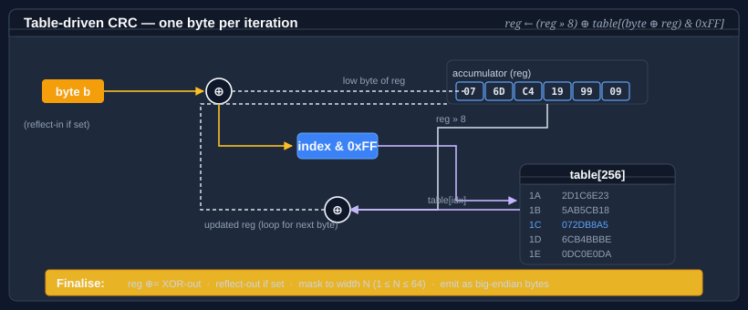

Using CRC
Bodu.IO.Hashing ships a single Crc engine that can compute any CRC of widths 1–64 bits. The parameters — polynomial, initial value, input / output reflection, XOR-out — are packed into an immutable CrcStandard that you pass to the constructor.

Pattern 1 — a named standard
The most common standards are exposed as strongly-typed properties. This is the shortest path to a working CRC.
using System.Text;
using Bodu.IO.Hashing.Checksums;
byte[] data = Encoding.UTF8.GetBytes("the quick brown fox");
var crc = new Crc(CrcStandard.CRC32_ISOHDLC);
crc.Append(data);
string hex = Convert.ToHexString(crc.GetCurrentHash()); // little-endian, low byte first
The default constructor new Crc() is equivalent to new Crc(CrcStandard.CRC32_ISOHDLC) — the canonical zlib / PNG / Ethernet / PKZIP CRC-32.
Note
Crc, CrcStandard, CrcStandards, and CrcLookupTableCache all live in the Bodu.IO.Hashing.Checksums namespace — add using Bodu.IO.Hashing.Checksums;, not using Bodu.IO.Hashing;.
Pattern 2 — pick from the enum
For anything outside the short list of strongly-typed properties, use the CrcStandards enum. Every canonical CRC RevEng entry has a member.
using Bodu.IO.Hashing.Checksums;
var crc16 = new Crc(CrcStandard.Get(CrcStandards.CRC16_XMODEM));
var crc8 = new Crc(CrcStandard.Get(CrcStandards.CRC8_SAEJ1850));
Instances are memoized inside CrcStandard, so repeated calls to Get for the same entry return the same reference.
Pattern 3 — look up by name (including aliases)
Canonical names and every published alias resolve to the same standard.
var a = new Crc(CrcStandard.FromName("CRC-32/ISO-HDLC"));
var b = new Crc(CrcStandard.FromName("PKZIP")); // same underlying instance
FromName is ordinal and case-sensitive. TryFromName returns false instead of throwing when the name is unknown, which is the safer choice for user-supplied configuration.
Pattern 4 — a custom parameter set
If your target isn't in the catalogue, construct a CrcStandard directly.
using Bodu.IO.Hashing.Checksums;
// A hypothetical 12-bit CRC for a bespoke serial frame.
var custom = new CrcStandard(
name: "CRC-12/MY-PROTOCOL",
size: 12,
polynomial: 0x80F,
initialValue: 0xFFF,
reflectIn: false,
reflectOut: false,
xOrOut: 0x000);
var crc = new Crc(custom);
Widths 1–64 bits are supported. CrcStandard validates the width at construction time.
Pattern 5 — streaming over bytes
Because Crc derives from NonCryptographicHashAlgorithm, the BCL streaming helpers apply. Call Append as many times as you like, then GetCurrentHash to finalize.
using Bodu.IO.Hashing.Checksums;
var crc = new Crc(CrcStandard.CRC32_ISCSI);
using (FileStream fs = File.OpenRead("archive.bin"))
{
byte[] buffer = new byte[64 * 1024];
int read;
while ((read = fs.Read(buffer, 0, buffer.Length)) > 0)
{
crc.Append(buffer.AsSpan(0, read));
}
}
byte[] fingerprint = crc.GetCurrentHash();
GetCurrentHash is non-destructive — finalization (output reflection, XOR-out, width-masking) is applied to a snapshot of the accumulator, so you can call it repeatedly without disturbing in-progress hashing. To restart from the initial value, call Reset.
Pattern 6 — resume from a stored digest
Crc implements IResumableHashAlgorithm, which lets you reverse-finalize a digest you computed earlier, append new bytes, and finalize again. Handy for append-only logs and chunked uploads where rehashing the whole input is expensive.
using System.Text;
using Bodu.IO.Hashing.Checksums;
var crc = new Crc(CrcStandard.CRC32_ISOHDLC);
byte[] firstDigest = crc.ComputeHash(Encoding.UTF8.GetBytes("the quick brown fox"));
// Later — resume from firstDigest, append a continuation, and finalize.
byte[] combined = crc.ComputeHashFrom(
previousHash: firstDigest,
newData: Encoding.UTF8.GetBytes(" jumps over the lazy dog"));
The combined digest is identical to what you'd get from a single pass over the concatenated input. The trick is that IResumableHashAlgorithm reverse-finalizes the stored digest — undoing the XOR-out, output reflection, and width-masking that GetCurrentHash applied — to recover the raw working register, appends the new bytes, and finalizes once more. There is no need to retain or re-read the original input.
ComputeHashFrom has three overloads — a ReadOnlySpan<byte> form, a byte[] form, and a byte[] form with an offset/length window — plus the allocation-free TryComputeHashFrom:
ReadOnlySpan<byte> tail = Encoding.UTF8.GetBytes(" jumps over the lazy dog");
// Span form — zero-copy over an existing buffer.
byte[] d1 = crc.ComputeHashFrom(previousHash: storedDigest, newData: tail);
// byte[] form with an offset/length window into newData.
byte[] d2 = crc.ComputeHashFrom(storedDigest, buffer, offset: 16, length: 240);
// Allocation-free form — writes into a caller buffer, returns false if it is too small.
Span<byte> destination = stackalloc byte[4]; // CRC-32 → 4 bytes
bool ok = crc.TryComputeHashFrom(storedDigest, tail, destination, out int written);
Important
Resuming only works when the stored digest was produced by a Crc with the same CrcStandard. The reverse-finalize step assumes the standard's reflection and XOR-out parameters; feeding a digest from a different standard yields a meaningless register. The same contract is implemented by the FNV, Fletcher, and Adler families, with the same rule: resume only with an instance of the same algorithm and parameters.
Pattern 7 — sharing lookup tables
Every Crc instance with the same (width, polynomial, reflect-in) triple shares a single 256-entry lookup table through GlobalCache. This means constructing a hundred Crc(CrcStandard.CRC32_ISOHDLC) instances allocates one table, not a hundred.
using Bodu.IO.Hashing.Checksums;
// Process-wide cache, shared across instances.
CrcLookupTableCache cache = Crc.GlobalCache;
// Replace the cache for a test, a benchmark, or isolation between tenants.
Crc.GlobalCache = new CrcLookupTableCache();
In practice you'll rarely need to touch the cache directly — the default behavior is what you want.
The table is keyed on the (width, polynomial, reflect-in) triple — the only parameters that change the per-byte step. Two standards that differ only in InitialValue or XOrOut (which affect the start and finish, not the inner loop) share one table. This is why constructing many Crc instances is cheap: the lazily built 256-entry table is the only non-trivial allocation, and it is shared.
Why a lookup table
A textbook CRC processes one input bit at a time — shift the register, test the top bit, conditionally XOR the polynomial. That is w operations per byte. Bodu's Crc is table-driven: at first use for a given parameter triple it precomputes the CRC contribution of every possible byte value at the register's leading position, then advances a whole byte per step with one table lookup and one XOR. The cost is a small, shared table (256 × width-in-bytes); the gain is roughly an order of magnitude in throughput over the bit-at-a-time form. The table build is amortised across every instance that shares the triple, so it is paid once per process, not once per Crc.
Error-detection guarantees
CRC is the checksum to reach for when you need provable coverage of a channel's error patterns rather than the merely-good behaviour of a fingerprint or twin-accumulator checksum. For a width-w standard with a well-chosen polynomial:
- Every single-bit error is detected.
- Every burst error of length ≤ w is detected.
- Every odd number of bit-flips is detected when the polynomial carries the
(x + 1)factor — true of most catalogue entries. - Longer bursts escape only with probability
≈ 2^−w(one in ~4 billion for a 32-bit CRC).
Pick the standard — not just the width — to match the channel: the RevEng catalogue records each polynomial's Hamming-distance behaviour, i.e. the smallest number of bit-flips that can slip through at a given message length. See the concepts page for the full guarantee table and the CRC catalogue for the named entries.
Important
None of this is an adversary model. A CRC protects against accidental corruption — line noise, bit-rot, a dropped frame. Anyone who can edit the payload can recompute the CRC. For tamper detection, use a keyed hash from Bodu.Security.Cryptography.
Where to go next
- Using Fletcher — the other checksum family in this package.
- CRC catalogue — the full table of 112 named standards.
- Bodu.IO.Hashing namespace page — key types and design notes.
- Hashing & Cryptography guides — every guide in this topic, across Bodu.IO.Hashing and Bodu.Security.Cryptography.